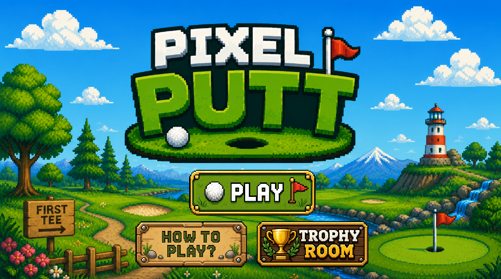
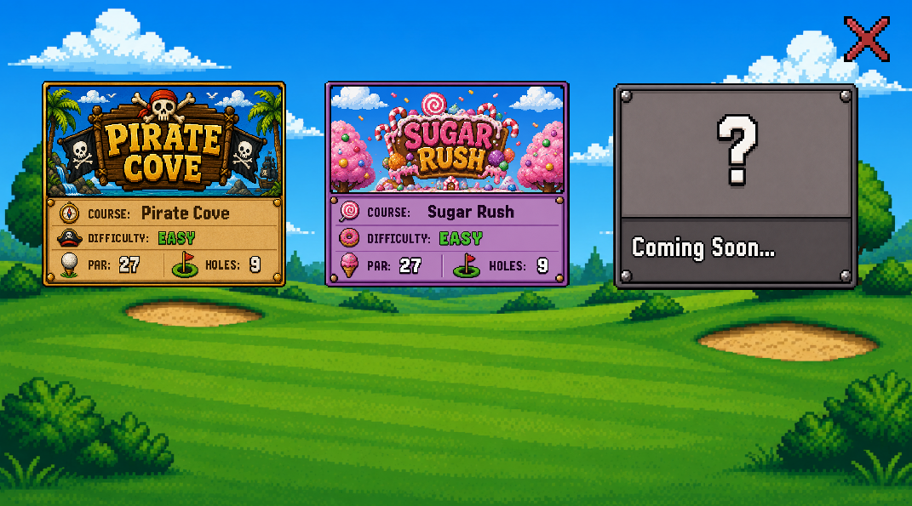
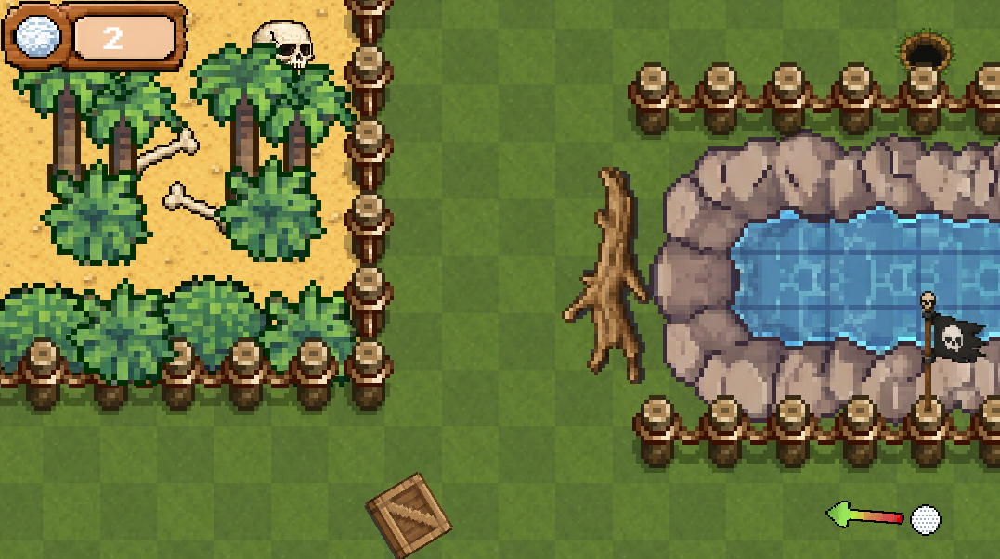
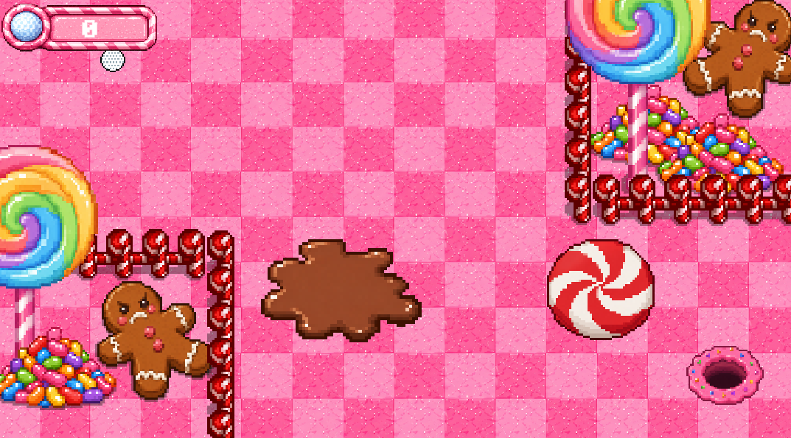
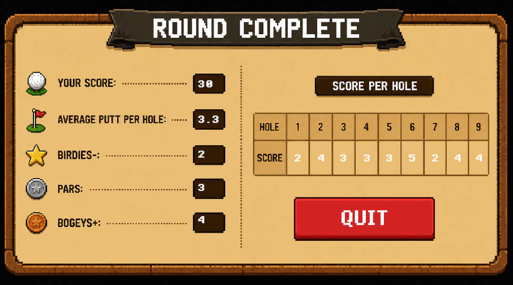

Computer Science student at Florida State University
Christopher
Thomas
Computer Science student interested in software engineering, artificial intelligence, and building practical interactive applications.

PROJECTS
Featured Work
Pixel Putt
A 2D pixel-art mini golf game built in Unity featuring themed courses, physics-based gameplay, unlockable trophies, and browser-based play.
Pixel Putt started as a fun side project where I could experiment with Unity and build a game from scratch. It combines casual mini golf with colorful themed courses, achievements, and unlockable trophies to create a relaxing, replayable experience.





Achievements
Certifications
Unity Essentials Certification - Issued May 15, 2026 - Unity Technologies
TECHNICAL SKILLS
Languages & Technologies
C# / Unity
Used extensively in Unity development projects such as Pixel Putt,
focusing on gameplay systems, progression mechanics, UI interactions,
and object-oriented programming concepts.
Java
Experience developing object-oriented applications and strengthening
foundational programming skills through coursework and personal projects.
HTML / CSS / JavaScript
Used to design and build responsive frontend web projects,
including this portfolio website, with a focus on clean UI design
and modern layouts.
C++
Currently developing experience with object-oriented programming,
dynamic memory management, data structures, and algorithmic problem solving
through coursework and programming projects.
ABOUT
About Me
I'm a Computer Science student at Florida State University with strong interests in software engineering, artificial intelligence, and building practical interactive applications. I enjoy learning modern technologies through hands-on projects and continuously expanding my technical skillset through both coursework and independent development.
My experience includes object-oriented programming, frontend web development, AI-integrated applications, and Unity/C# development. I enjoy creating projects that strengthen my understanding of scalable software systems, problem solving, and real-world development workflows.
Outside of coursework, I spend time exploring new technologies, experimenting with interactive systems, and building projects that combine technical functionality with user-focused design. I'm especially interested in the future of AI-driven software and how intelligent systems can improve user experiences and digital tools.